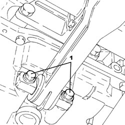
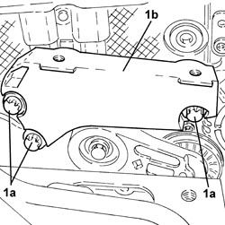
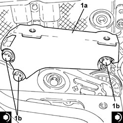
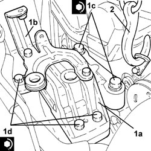
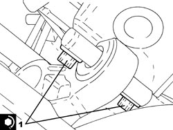
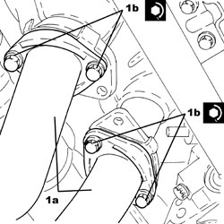
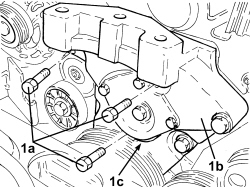
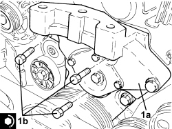
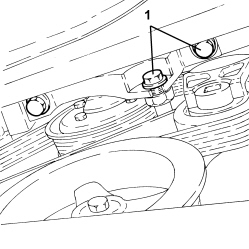

1008A46 POWER UNIT RIGID SUPPORT - TIMING SIDE - R.R.
- Path
- Procedures > 10 ENGINE > 1008 POWER UNIT SUPPORTS > 1008A POWER UNIT FASTENINGS > 1008A46 POWER UNIT RIGID SUPPORT - TIMING SIDE - R.R.
- Kind
- repair procedure (removal / refitting; the operation number is the code)
- Applies to
- engines: 1.9 JTS, 2.2 JTS, 3.2 JTS, 1.9 JTD 8V, 1.9 JTD 16V, 2.4 JTD 20V; all production periods
- Interactive page
- https://sloeber94.github.io/elrnDB/alfa/159/en/#/939010407
Applies to: engines: 1.9 JTS, 2.2 JTS; all production periods
 Removing
Removing
 Refitting
Refitting- Position the vehicle on a lift.
Op. 1048A28 VACUUM AIR CIRCUIT RESONATOR PIPE - R+R
- Using a suitable syringe, draw off the power assisted steering fluid from the reservoir.
1. Undo the connector (1a) and disconnect the supply pipe from the pump to the power assisted steering box (1b), power assisted steering pump side.
2. Loosen the band and disconnect the power assisted steering fluid pipe from the reservoir to the pump, power assisted steering pump side.
3. Loosen the band and disconnect the power assisted steering fluid return pipe from the heat exchanger to the reservoir, reservoir side.
4. Undo the bolts (4a) and remove the power assisted steering fluid reservoir (4b) complete with pipe (4c).

Applies to: engines: 1.9 JTS, 2.2 JTS; all production periods
1. Undo the bolts (1a) and disconnect the intermediate exhaust pipe (1b), exhaust manifold side with the catalytic converter.

Applies to: engines: 1.9 JTS, 2.2 JTS; all production periods
1. Undo the bolts fixing the power unit lower reaction rod, engine crankcase sump side.

Applies to: engines: 1.9 JTS, 2.2 JTS; all production periods
1. Undo the bolts fixing the power unit rear support flexible mounting, rigid support side.

Applies to: engines: 1.9 JTS, 2.2 JTS; all production periods
1. Support the power unit using a hydraulic hoist fitted with a suitable chain connected to the mounting bracket on the engine.
2. Undo the bolts (2a), (2b) and remove the power unit timing side front support flexible mounting (2c) complete with power assisted steering fluid reservoir mounting bracket (2d).

Applies to: engines: 1.9 JTS, 2.2 JTS; all production periods
- Raise the engine, as necessary, using the hydraulic hoist.

Applies to: engines: 1.9 JTS, 2.2 JTS; all production periods
Refitting
Removing1. Place the power unit timing side rigid support (1a) in its housing and secure it by tightening the bolts (1b) to the recommended torque.
Component | Fastening | dia | Value (daNm) | Validity |
|---|---|---|---|---|
Timing side power unit rigid support | Bolt | M12 | (engine crankcase side) 8.5 - 10.5 | 1.9 JTS 2.2 JTS |
- Place the engine in its housing using the hydraulic hoist.

Applies to: engines: 1.9 JTS, 2.2 JTS; all production periods
1. Place the power unit timing side front support flexible mounting (1a) in its housing complete with power assisted steering fluid reservoir mounting bracket (1b) and secure it by tightening the new bolts (1c) and (1d) to the recommended torque.
Component | Fastening | dia | Value (daNm) | Validity |
|---|---|---|---|---|
Timing side power unit rigid support flexible mounting | Bolt (to be replaced) | M12 | (rigid support side) 6.3 - 7.7 + 90° |
Component | Fastening | dia | Value (daNm) | Validity |
|---|---|---|---|---|
Timing side power unit rigid support flexible mounting | Bolt (to be replaced) | M12 | (bodyshell side) 6.3 - 7.7 + 90° |
2. Remove the hydraulic hoist fitted with a suitable chain connected to the mounting bracket on the engine.

Applies to: engines: 1.9 JTS, 2.2 JTS; all production periods
1. Tighten the bolts fixing the power unit rear support flexible mounting, rigid support side to the recommended torque.
Component | Fastening | dia | Value (daNm) | Validity |
|---|---|---|---|---|
Power unit rigid rear support flexible mounting | Bolt | M10 | (rigid support side) 5.4 - 6.6 |

Applies to: engines: 1.9 JTS, 2.2 JTS; all production periods
1. Tighten the bolts fixing the power unit lower reaction rod, engine crankcase sump side to the recommended torque.
Component | Fastening | dia | Value (daNm) | Validity |
|---|---|---|---|---|
Power unit lower reaction rod | Bolt | M10 | (engine crankcase sump side) 5.4 - 6.6 |

Applies to: engines: 1.9 JTS, 2.2 JTS; all production periods
1. Connect the intermediate exhaust pipe (1a), exhaust manifold side with the catalytic converter and tighten the bolts (1b) to the recommended torque.
Component | Fastening | dia | Value (daNm) | Validity |
|---|---|---|---|---|
Intermediate exhaust pipe with flexible section | Bolt | M8 | (exhaust manifold side with catalytic converter) 2.2 - 2.6 | 1.9 JTS 2.2 JTS |

Applies to: engines: 1.9 JTS, 2.2 JTS; all production periods
- Place the power assisted steering fluid reservoir complete with pipe in its housing and secure it using the bolts.
- Connect the return pipe from the heat exchanger to the power assisted steering fluid reservoir, reservoir side and tighten the band.
- Connect the supply pipe from the fluid reservoir to the power assisted steering pump, power assisted steering pump side, and tighten the band.
- Connect the supply pipe from the pump to the power assisted steering box, power assisted steering pump side and tighten the connector to the recommended torque.
Component | Fastening | dia | Value (daNm) | Validity |
|---|---|---|---|---|
Supply pipe from pump to power assisted steering box | Connector | M16 | (power assisted steering pump side) 3.6 - 4.4 |
Op. 1048A28 VACUUM AIR CIRCUIT RESONATOR PIPE - R+R
Op. 0010T71 POWER STEERING FLUID CHECK LEVEL AND TOP UP IF NECESSARY
Op. 0010T75 HYDRAULIC POWER STEERING SYSTEM BLEED AIR
- Remove the vehicle from the lift.
Applies to: engines: 1.9 JTD 8V, 1.9 JTD 16V; all production periods
Removing
RefittingOp. 1048A28 VACUUM AIR CIRCUIT RESONATOR PIPE - R+R
Op. 1016A10 SOUND-PROOFING COVER - R.R
Op. 1008B10 POWER UNIT FRONT SUPPORT FLEXIBLE MOUNTING (TIMING SIDE) - REPLACE
Op. 1092G10 SINGLE ENGINE BELT - R.R
1. Undo the bolts (1a) and remove the power unit timing side rigid support (1b) complete with fixed tensioner (1c).

Applies to: engines: 1.9 JTD 8V, 1.9 JTD 16V; all production periods
- If the rigid support is replaced the fixed tensioner cannot be kept because removing it destroys it.
Applies to: engines: 1.9 JTD 8V, 1.9 JTD 16V; all production periods
Refitting
Removing1. Place the power unit timing side rigid support (1a) in its housing and secure it tightening the bolts (1b) to the recommended torque.
Component | Fastening | dia | Value (daNm) | Validity |
|---|---|---|---|---|
Timing side power unit rigid support | Bolt | M10 | (engine crankcase side) 4.5 - 5.5 | 1.9 JTD 8V 1.9 JTD 16V 2.4 JTD 20V |

Applies to: engines: 1.9 JTD 8V, 1.9 JTD 16V; all production periods
Op. 1092G10 SINGLE ENGINE BELT - R.R
Op. 1008B10 POWER UNIT FRONT SUPPORT FLEXIBLE MOUNTING (TIMING SIDE) - REPLACE
Applies to: engines: 2.4 JTD 20V; all production periods
- On this car, it is not possible to remove/refit the timing side power unit rigid mount on the car.
To perform this operation, remove/refit the power unit
Op. 1004B10 POWER UNIT WITH MANUAL GEARBOX - R.R
and then work at the bench, customising the engine service procedures for this operation.
Applies to: engines: 3.2 JTS; all production periods
Removing
Refitting- Position the vehicle on a lift.
Op. 4450B04 RIGHT FRONT WHEEL - R.R
Op. 7055B91 RIGHT FRONT WHEEL ARCH LINER - R.R.
Op. 7055B66 ENGINE COMPARTMENT DUST COVER IN RIGHT FRONT WHEEL ARCH - R.R.
1. Undo the bolts fixing the lower rigid support to the engine crankcase and to the upper rigid support for the power unit.

Applies to: engines: 3.2 JTS; all production periods
Op. 1008B10 POWER UNIT FRONT SUPPORT FLEXIBLE MOUNTING (TIMING SIDE) - REPLACE
1. Undo the power assisted steering fluid pipe bracket retaining bolt
2. Undo the bolts fixing the upper rigid support and remove it.

Applies to: engines: 3.2 JTS; all production periods
Refitting
Removing- Place the lower rigid support in its housing and secure it tightening the lower bolt to the recommended torque.
Component | Fastening | dia | Value (daNm) | Validity |
|---|---|---|---|---|
Timing side lower rigid support to engine | Bolt | M10 | 5.4 ÷ 6.6 | 3.2 JTS |
- Place the upper rigid support in its housing and secure it tightening the bolts to the recommended torque.
Component | Fastening | dia | Value (daNm) | Validity |
|---|---|---|---|---|
Timing side upper rigid support to engine | Bolt (to be replaced) | M12 | 6.3 ÷ 7.7 + 90° | 3.2 JTS |
- Connect the lower rigid support to the upper one tightening the bolts to the recommended torque.
Component | Fastening | dia | Value (daNm) | Validity |
|---|---|---|---|---|
Lower rigid support to timing side upper support | Bolt | M10 | 5.4 ÷ 6.6 | 3.2 JTS |
- Place the power assisted steering fluid pipe in position and fasten the bracket to the rigid support using the bolt.
Op. 1008B10 POWER UNIT FRONT SUPPORT FLEXIBLE MOUNTING (TIMING SIDE) - REPLACE
Op. 7055B66 ENGINE COMPARTMENT DUST COVER IN RIGHT FRONT WHEEL ARCH - R.R.
Op. 7055B91 RIGHT FRONT WHEEL ARCH LINER - R.R.
Op. 4450B04 RIGHT FRONT WHEEL - R.R
- Remove the vehicle from the lift.
Topics linked from this page (10)
- 0010T71 POWER STEERING FLUID CHECK LEVEL AND TOP UP IF NECESSARY
- 0010T75 HYDRAULIC POWER STEERING SYSTEM BLEED AIR
- 1004B10 POWER UNIT WITH MANUAL GEARBOX - R.R
- 1008B10 POWER UNIT FRONT SUPPORT FLEXIBLE MOUNTING (TIMING SIDE) - REPLACE
- 1016A10 SOUND-PROOFING COVER - R.R
- 1048A28 VACUUM AIR CIRCUIT RESONATOR PIPE - R+R
- 1092G10 SINGLE ENGINE BELT - R.R
- 4450B04 RIGHT FRONT WHEEL - R.R
- 7055B66 ENGINE COMPARTMENT DUST COVER IN RIGHT FRONT WHEEL ARCH - R.R.
- 7055B91 RIGHT FRONT WHEEL ARCH LINER - R.R.
Topics that link to this page (14)
- 1016C10 SINGLE CYLINDER HEAD - R.R. AND REPLACE GASKET
- 1020D18 FRONT CRANKSHAFT COVER OIL SEAL - R.R.
- 1032B10 TOOTHED TIMING BELT - R + R FOR TIMING ADJUSTMENT OR REPLACEMENT
- 1036B10 OVERHEAD CAMSHAFT IN CYLINDER HEAD - R.R ON VEHICLE
- 1056F46 PHASE TRANSFORMER SOLENOID, LEFT CYLINDER HEAD INTAKE OR EXHAUST - R.R.
- 1056F47 PHASE TRANSFORMER SOLENOID, RIGHT CYLINDER HEAD INTAKE OR EXHAUST - R.R.
- 1056F55 LEFT CYLINDER HEAD INTAKE OR EXHAUST CAM ANGLE SENSOR - R.R.
- 1072B10 INLET MANIFOLD - R + R AND REPLACE SEAL
- 1088C10 WATER PUMP - R + R
- 1088C22 WATER PUMP PULLEY - R.R.
- 1088D24 WATER PUMP RIGID COOLANT INLET PIPE - R.R.
- 1092A10 CRANKSHAFT PULLEY - R + R
- 1092G10 SINGLE ENGINE BELT - R.R
- 1092G14 ENGINE COMPONENT SINGLE BELT MOVING TENSIONER - R + R